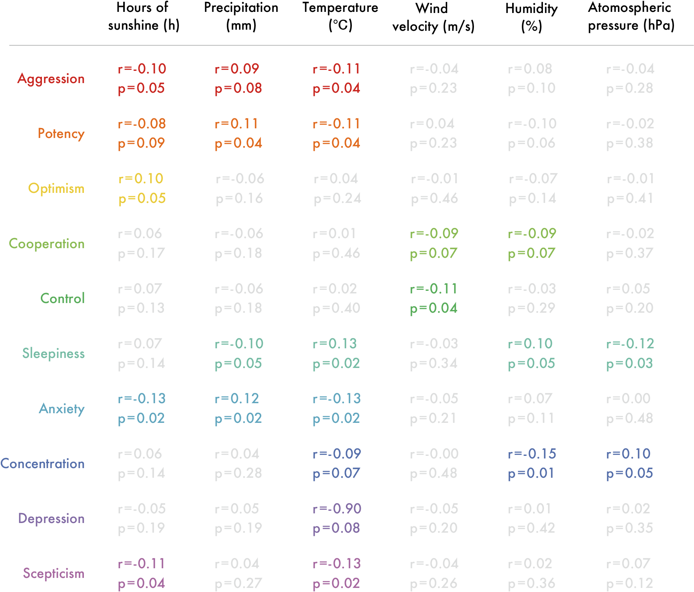
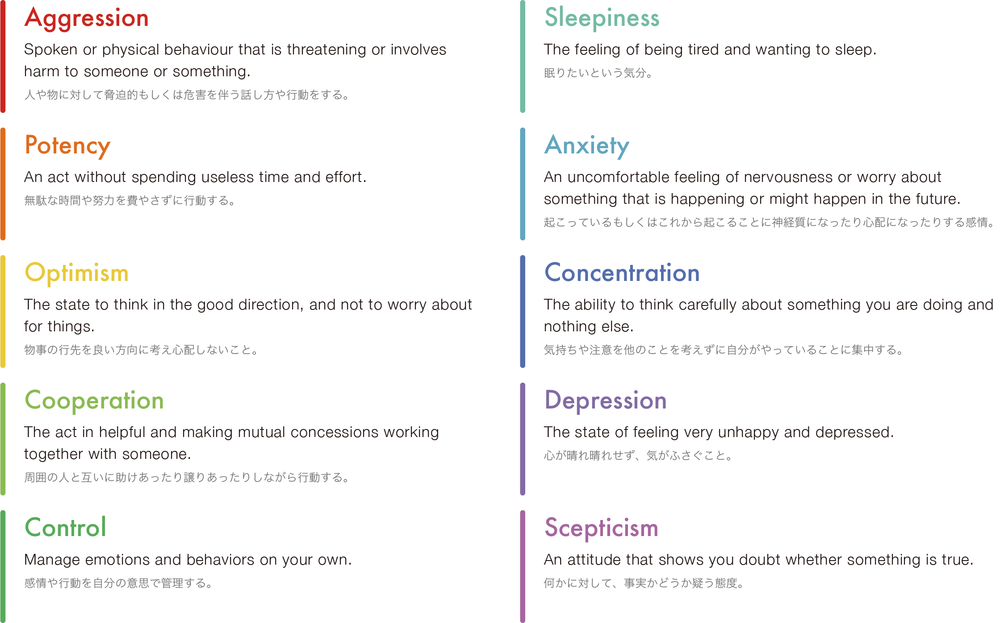
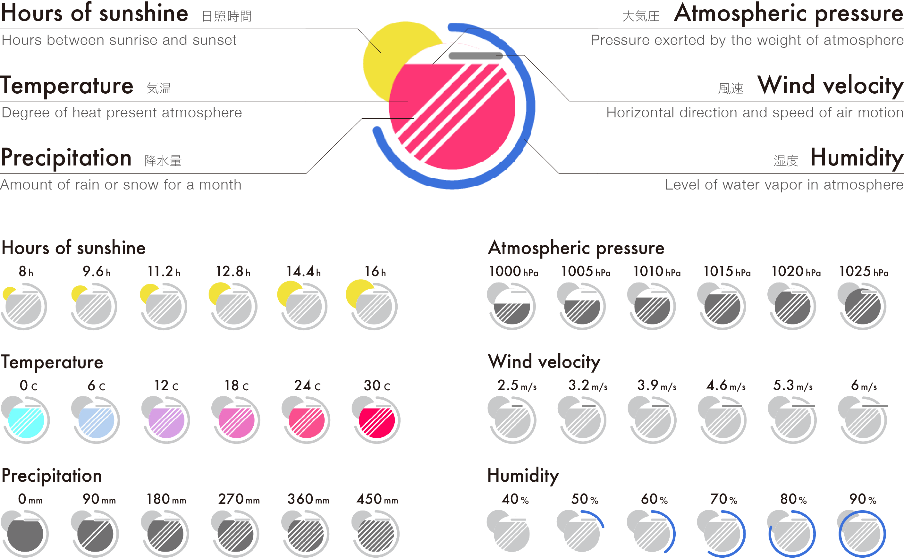
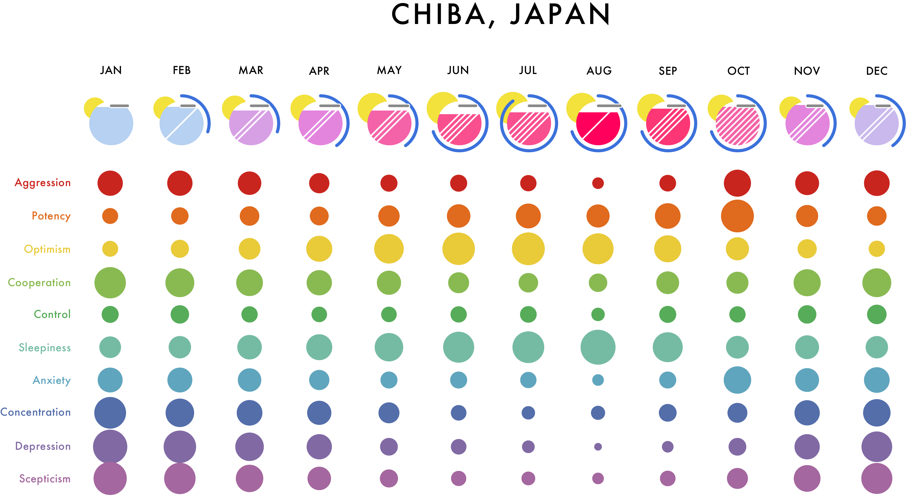
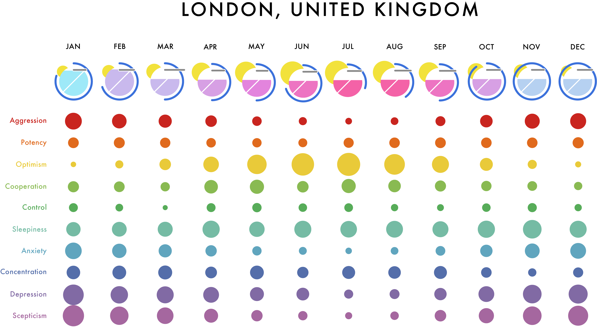
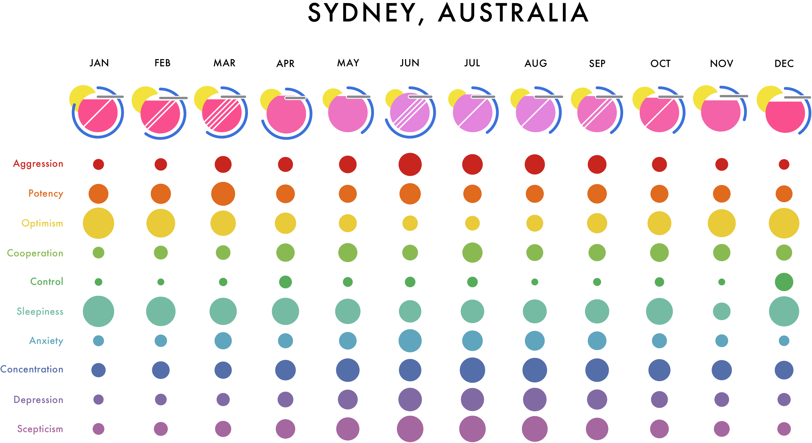
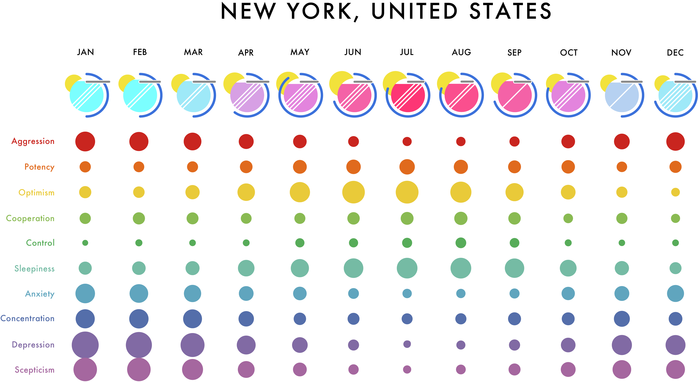
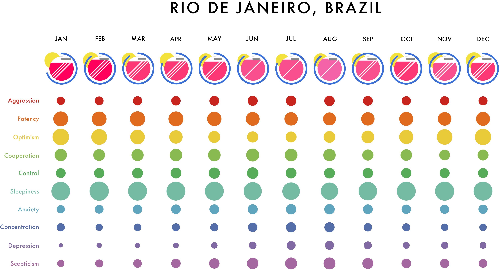

How emotions change with weather
Have you ever felt that your feelings change depending on the weather, climate, or season?
We visualized how ten emotions change with six weather variables from the research on the correlation between climate condition and emotions.
Knowing how emotions are affected by the weather will help you objectify yourself to confront yourself again and prepare yourself.
Emotion calculation system based on weather data
E . Howarth and M. S. Hoffman 1984, 'A multidimensional approach to the relationship between mood and weather'
We referred to this paper to investigate the correlation between the ten emotions and the six weather indicators.
The figure above shows the correlation. Based on this, we created a system that can calculate the magnitude of emotions from weather data.
10 emotions
6 weather indicators
World five cities calendar 2019
This graph shows how people's emotions change throughout the year targeting cities in five countries, Japan, the United Kingdom, the United States, Australia, and Brazil.
From the monthly weather average in 2019, we calculated each emotion's magnitude using the system.





Weathered emotions forecaster prototype
The purpose of this weather and emotion forecast app is to let you know the weather and emotions of the coming day. You customize the emotions that they want to see.
For example, if you want to work check how sleepiness and concentration would change in one day, select sleepiness and concentration.
Then the app shows the transition of those two emotions.
There is a weather icon in the center with the current time, and around it is the time of day, and each emotion line represents each hour's ups and downs.
As time changes, the weather icon changes, and the sphere on the emotion line also moves on time.
You can access to the prototype through the link.
You can see a prototype on Apple watch by sending a link via message app or email from your phone, and open the link on message/email on Apple watch.
Also you can see the prototype on your phone by just accessing the link.
for Watch
for Smartphone & Desktop
Also, you can check how this prototype works in the following video.